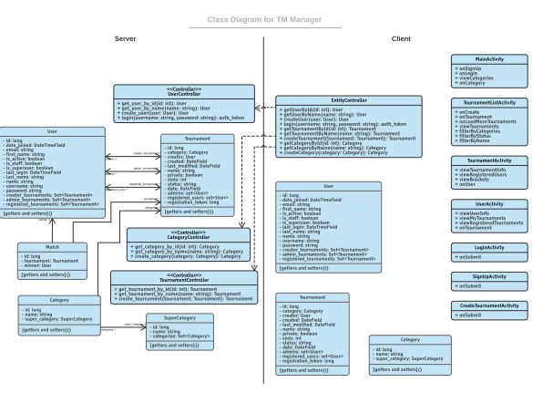
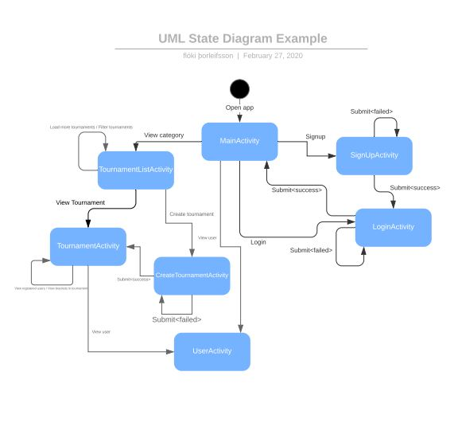
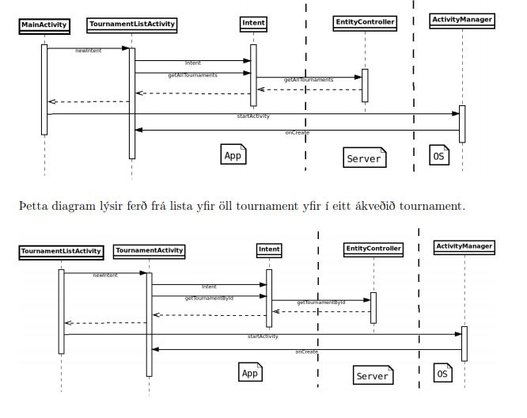
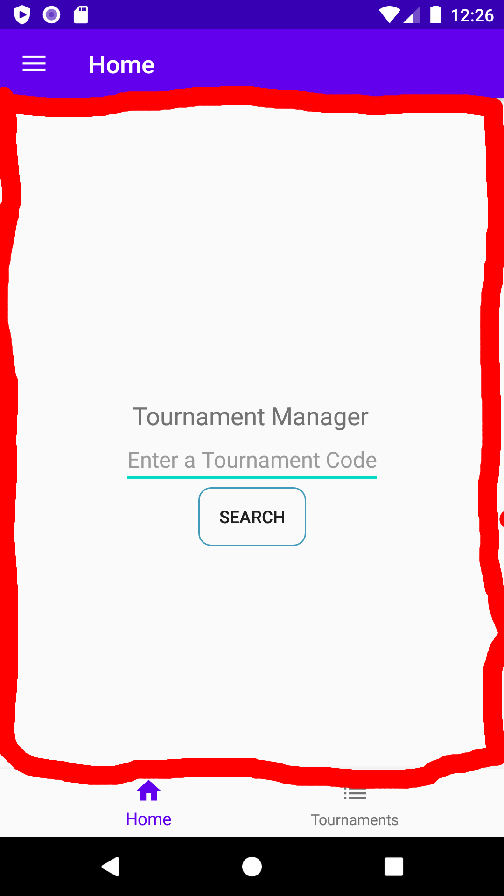
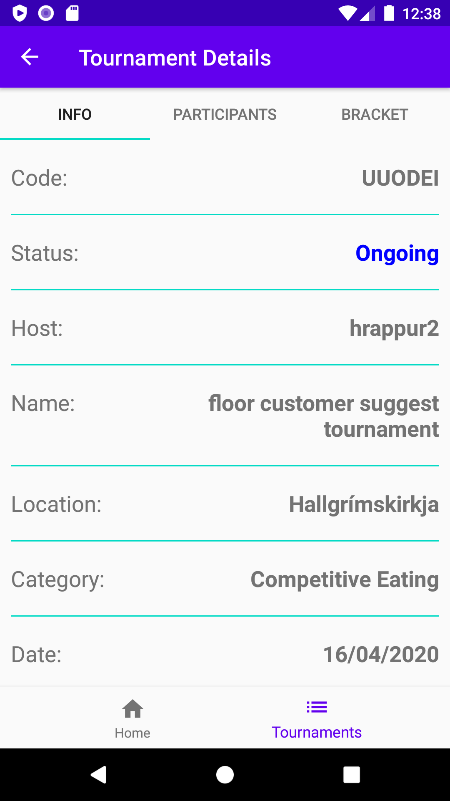
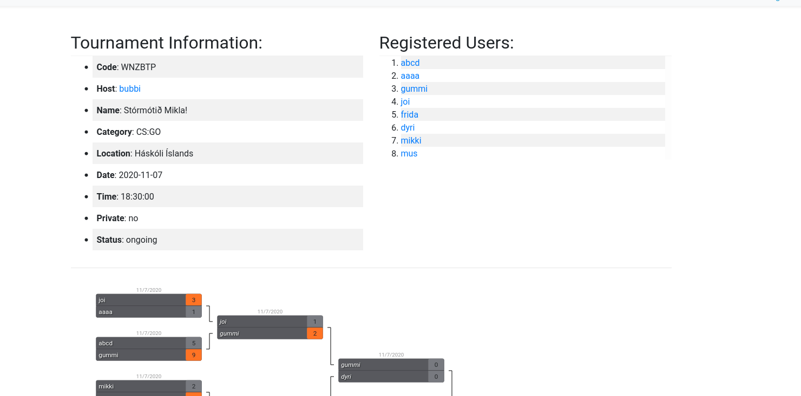

<!DOCTYPE html>
<html lang="en">
  <head>
    <meta charset="utf-8" />
    <meta name="viewport" content="width=device-width, initial-scale=1.0, maximum-scale=1.0, user-scalable=no" />

    <title>reveal-md</title>
    <link rel="stylesheet" href="./css/reveal.css" />
    <link rel="stylesheet" href="./css/theme/black.css" id="theme" />
    <link rel="stylesheet" href="./css/highlight/zenburn.css" />
    <link rel="stylesheet" href="./css/print/paper.css" type="text/css" media="print" />

  </head>
  <body>
    <div class="reveal">
      <div class="slides"><section  data-markdown><script type="text/template"># Tournament Manager App

Egill Ragnarsson

Flóki Þorleifsson

Guðmundur Óli Norland

Hjalti Geir Garðarsson
</script></section><section  data-markdown><script type="text/template">
## Architecture & Design
</script></section><section ><section data-markdown><script type="text/template">
## Technology
</script></section><section data-markdown><script type="text/template">
### Backend

- Django
  - Backend framework written in python
- GraphQL
  - Open-source data query and manipulation language for APIs.
  - **Graphene:** library for building GraphQL APIs in Python easily
- PostgreSQL
  - Open-source relational database management system.
</script></section><section data-markdown><script type="text/template">
### Frontend

- Java (Android Studio)
  - App framework written in java
- Apollo Client
  - A complete state management library for JavaScript apps.
</script></section></section><section ><section data-markdown><script type="text/template">
## Models
</script></section><section data-markdown><script type="text/template">### Class Diagram
</img>
</script></section><section data-markdown><script type="text/template">### State Machine Diagram
</img>
</script></section><section data-markdown><script type="text/template">### Sequence Diagram
</img>
</script></section></section><section  data-markdown><script type="text/template">
## Key design decisions
</script></section><section ><section data-markdown><script type="text/template">
### Fragments over activities

</img>
</script></section><section data-markdown><script type="text/template">
### Fragment

```java
public class HomeFragment extends Fragment {

    private HomeViewModel homeViewModel;

    public View onCreateView(@NonNull LayoutInflater inflater, ViewGroup container, Bundle savedInstanceState) {
        View root = inflater.inflate(R.layout.fragment_home, container, false);
        homeViewModel = new ViewModelProvider(this).get(HomeViewModel.class);

        Button findTournamentButton = root.findViewById(R.id.find_tournament_button);

        // Search button listener
        findTournamentButton.setOnClickListener(v -> {
            EditText text = root.findViewById(R.id.find_tournament_text);
            String code = text.getText().toString();
            homeViewModel.fetchTournaments(code);
        });

        observeViewModel();

        return root;
    }
}
```
</script></section><section data-markdown><script type="text/template">
### ViewModel

```java
public class HomeViewModel extends ViewModel {

    private final MutableLiveData<TournamentInfoQuery.Data> infoObservable =
            new MutableLiveData<>();

    public MutableLiveData<TournamentInfoQuery.Data> getInfoObservable() {
        return infoObservable;
    }

    public void fetchTournaments(String code) {
        ApiRepository.getInstance().getTournamentInfo(infoObservable, code);
    }
}
```
</script></section><section data-markdown><script type="text/template">
```
ui
├── authentication
│   ├── LoginFragment.java
│   ├── LoginViewModel.java
│   └── RegisterDialogFragment.java
├── collections
│   ├── CollectionAdapter.java
│   ├── CollectionProfileFragment.java
│   ├── CollectionTournamentFragment.java
│   └── CollectionTournamentsFragment.java
├── home
│   ├── HomeFragment.java
│   └── HomeViewModel.java
├── newtournament
│   ├── NewTournamentFragment.java
│   └── NewTournamentViewModel.java
├── profile
│   ├── ProfileFragment.java
│   └── ProfileViewModel.java
└── tournaments
    ├── filters
    │   └── CategoryFilterDialogFragment.java
    ├── TournamentBracket.java
    ├── TournamentBracketViewModel.java
    ├── TournamentInfoFragment.java
    ├── TournamentInfoViewModel.java
    ├── TournamentListAdapter.java
    ├── TournamentRegisterFragment.java
    ├── TournamentRegisterViewModel.java
    ├── TournamentsFragment.java
    └── TournamentsViewModel.java

```
</script></section><section data-markdown><script type="text/template">
### Collections

- Used to bundle fragments together

```java
tournamentsCollectionAdapter = new CollectionAdapter(this);
        tournamentsCollectionAdapter.add(TournamentInfoFragment.newInstance(code), "Info");
        tournamentsCollectionAdapter.add(TournamentRegisterFragment.newInstance(code), "Participants");
        tournamentsCollectionAdapter.add(TournamentBracket.newInstance(code), "Bracket");
```
</script></section><section data-markdown><script type="text/template">
</img>
</script></section></section><section ><section data-markdown><script type="text/template">
## Key features
</script></section><section data-markdown><script type="text/template">
### Login


</script></section><section data-markdown><script type="text/template">
### Profile


</script></section><section data-markdown><script type="text/template">
### New Tournament


</script></section><section data-markdown><script type="text/template">
### Tournament Info


</script></section><section data-markdown><script type="text/template">
### Tournament Code


</script></section></section><section ><section data-markdown><script type="text/template">
### Complete integration
</script></section><section data-markdown><script type="text/template">
* The website and the app share the same backend
  * Any changes made in the app are reflected on the website and vice versa
* You can be logged into our website and app simultaneously
</script></section><section data-markdown><script type="text/template">

</script></section><section data-markdown><script type="text/template">

</script></section></section><section ><section data-markdown><script type="text/template">
## Software Process
</script></section><section data-markdown><script type="text/template">
- The core concept was decided upon pretty early own
- Development started out slow with the set up of our environment
</script></section><section data-markdown><script type="text/template">
### Challenges

- The construction of our foundation
  - Communication between our two modes of navigations
  - Connection between the fragment, viewmodel and our backend
  - Proper mangement of the logged in state
</script></section><section data-markdown><script type="text/template">
### Solutions

- A lot of time digging through documentations
- We managed to seperate the fragment, viewmodel and our backend communication
- User data and the login state are managed by a special class called **SharedPref**
</script></section></section><section ><section data-markdown><script type="text/template">
## Conclusion
</script></section><section data-markdown><script type="text/template">
### Success

- Clear vision shared among all members of the group
- Good communication
- Clean and modular frontend, due to our fragments
- The scope of the project
</script></section><section data-markdown><script type="text/template">
### Failure

- Underestimation of the setup of the fragments and viewmodels
- Underestimation of the complexity of the android api and the apollo java client
</script></section></section><section  data-markdown><script type="text/template">
</script></section></div>
    </div>

    <script src="./js/reveal.js"></script>

    <script>
      function extend() {
        var target = {};
        for (var i = 0; i < arguments.length; i++) {
          var source = arguments[i];
          for (var key in source) {
            if (source.hasOwnProperty(key)) {
              target[key] = source[key];
            }
          }
        }
        return target;
      }

      // Optional libraries used to extend on reveal.js
      var deps = [
        { src: './plugin/markdown/marked.js', condition: function() { return !!document.querySelector('[data-markdown]'); } },
        { src: './plugin/markdown/markdown.js', condition: function() { return !!document.querySelector('[data-markdown]'); } },
        { src: './plugin/highlight/highlight.js', async: true, callback: function() { hljs.initHighlightingOnLoad(); } },
        { src: './plugin/zoom-js/zoom.js', async: true },
        { src: './plugin/notes/notes.js', async: true },
        { src: './plugin/math/math.js', async: true }
      ];

      // default options to init reveal.js
      var defaultOptions = {
        controls: true,
        progress: true,
        history: true,
        center: true,
        transition: 'default', // none/fade/slide/convex/concave/zoom
        dependencies: deps
      };

      // options from URL query string
      var queryOptions = Reveal.getQueryHash() || {};

      var options = extend(defaultOptions, {}, queryOptions);
    </script>


    <script>
      Reveal.initialize(options);
    </script>
  </body>
</html>
